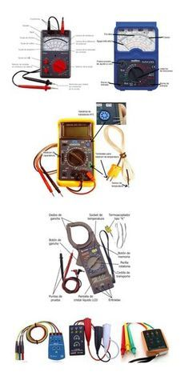
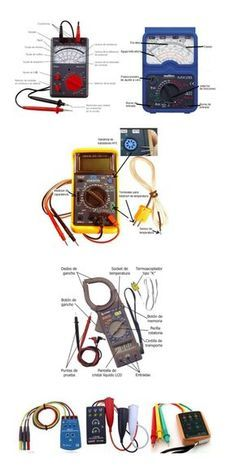
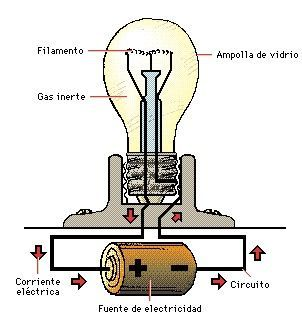
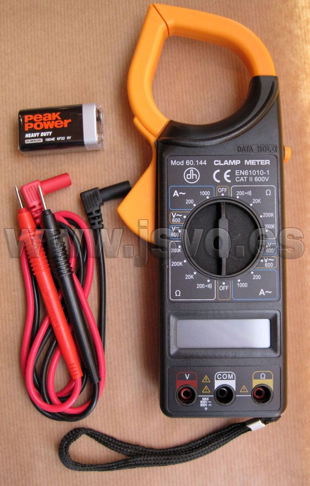
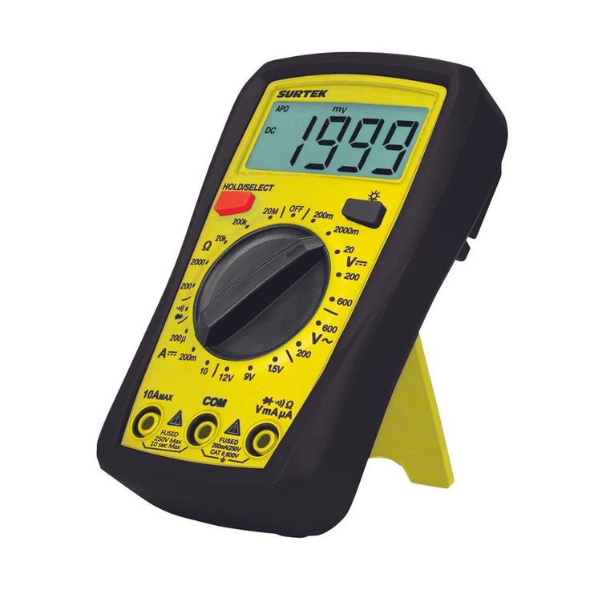

Los instrumentos de medición de electricidad básica son dispositivos utilizados para cuantificar diferentes magnitudes eléctricas, como voltaje, corriente y resistencia.

Los instrumentos de medición de electricidad básica son dispositivos utilizados para cuantificar diferentes magnitudes eléctricas, como voltaje, corriente y resistencia.

La corriente se mide colocando el instrumento sobre la línea (fase) a la cual se desea medir. El método de conexión utilizado es en SERIE con la carga, es decir, se conecta el instrumento sobre el mismo cable. Para medir corriente se utiliza un AMPERÍMETRO, el cual puede ser analógico o digital (Anonimo, 2005).

Otro método de medición de corriente utilizado es con el uso de PINZA AMPEROMETRICA, que mediante la medición del campo magnético generado por la corriente, es traducida a valor de corriente en Ampers. Permite medición en CORRIENTE CONTINUA y CORRIENTE ALTERNA Rogowski, W (Anonimo, 2005).

Para la medición de tensión se debe colocar el instrumento de forma PARALELA a la carga o a la fuente (tomacorriente, barra, etc.), es decir, si se mide tensión en un circuito monofásico (220V) se debe colocar las puntas del instrumento una sobre la fase y la restante sobre el neutro. Para la medición de tensión en un circuito trifásico (380V entre fases), se deben colocar las puntas sobre cada una de las fases o entre el neutro y cualquiera de las 3 fases (Anonimo, 2005).

Se determinan 3 potencias asociadas a cargas con impedancias en corriente alterna:
Potencia Aparente mediante la medición de la corriente y la tensión, se puede determinar realizando el producto:
S=V.I [VA]
Potencia Activa dicha potencia puede ser obtenida directamente de la medición utilizando como instrumento un VOLTÍMETRO, que indica de forma directa el valor de potencia.
P=V.I.cos Ø [W]
Potencia Reactiva Esta potencia puede ser determinada con la tensión y corriente y tomando el seno del ángulo Ø.
Q=V.I.Ø [VAR]
Obra publicada con Licencia Creative Commons Reconocimiento Compartir igual 4.0